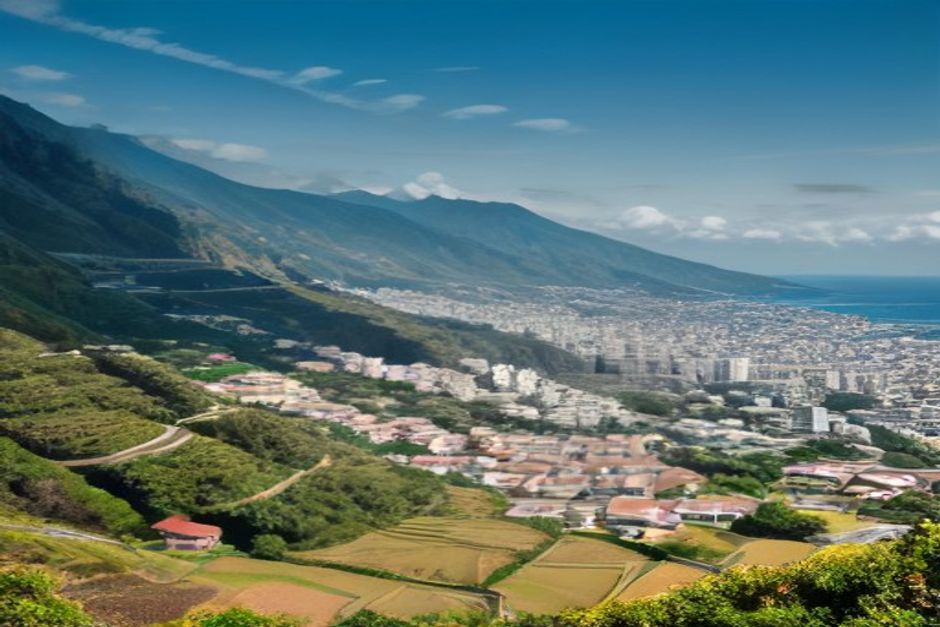

Chi cerca "Madeira con bambini" di solito ha in mente due paure: i sentieri a strapiombo e il mare che non è quello dei Caraibi. Sono paure legittime, ma si risolvono. Madeira si gira con i più piccoli molto meglio di quanto dica la sua fama di isola per escursionisti. Vi spieghiamo cosa funziona, cosa lasciar perdere e come costruire una settimana tranquilla.
Madeira è adatta ai bambini? La risposta breve
Sì, a una condizione: non pianificate la vacanza attorno ai sentieri di montagna. Pianificatela attorno all'acqua e alle cose facili.
Il primo vantaggio è la distanza. Funchal, l'aeroporto e la maggior parte degli hotel della costa sud stanno a circa 40 minuti di auto l'uno dall'altro. Non perdete giornate intere in trasferimenti, e per chi viaggia con un bimbo che si addormenta in macchina è un dettaglio che conta.
Il secondo è il clima subtropicale: inverno mite, estate calda ma non soffocante. Il terzo è meno ovvio. Madeira non ha quasi spiagge di sabbia naturale, quindi il bagno si fa soprattutto in piscine di acqua di mare, basse e costruite apposta. Per tenere d'occhio un bambino piccolo sono più comode di una spiaggia con le onde.

Cosa fare a Madeira con i bambini senza fare trekking
Le levadas più famose hanno gallerie buie, dislivelli e percorsi di ore. Per i piccoli non sono una buona idea, e non serve farle per godersi l'isola. Ecco cosa funziona davvero.
- La funivia del Monte, che sale da Funchal, è già un'attrazione di per sé: si guarda la città rimpicciolire sotto i piedi.
- I carros de cesto sono slitte di vimini guidate da due uomini con il cappello di paglia lungo le strade sotto il Monte. Per la maggior parte dei bambini è la cosa che ricorderanno di più.
- Il CR7 Museum a Funchal piace ai piccoli tifosi di calcio.
- Il Museu da Baleia a Machico, il museo della balena, è adatto ai curiosi di vita marina.
- Il Parco di Santa Catarina a Funchal ha un parco giochi e un laghetto con le anatre: perfetto per un pomeriggio lento.
E poi c'è il mare. Per i bambini un po' più grandi, una gita in barca a Madeira copre più costa di quasi tutto ciò che si fa a terra, e non richiede di camminare.
Gita in barca a Madeira con bambini piccoli: come funziona
Si può, e la formula privata è molto più comoda per una famiglia di un tour condiviso. Su una barca condivisa dovete seguire il programma di altri, in mezzo a gente che non conoscete. Su una barca privata la gestione è vostra.
Con Chifbay la barca è solo per il vostro gruppo, fino a 5 persone, con due skipper abilitati di Madeira. Il punto d'incontro è la Marina do Funchal, pontile C. Questo significa, in concreto, che potete:
- accorciare la sosta per il bagno se il più piccolo ne ha avuto abbastanza;
- tenere il giubbotto di salvataggio addosso ai bambini per tutto il tempo;
- saltare qualsiasi cosa non vada bene al gruppo, perché non c'è un itinerario condiviso con altri.
Le due uscite sono diverse e conviene sceglierle in base all'età.
La gita di giorno: per chi vuole il bagno
Parte alle 10:00 o alle 14:00 e segue il tratto di costa tra Câmara de Lobos, Cabo Girão e la Fajã dos Padres, dove si fa il bagno e ci sono le tavole da paddle. Sono 2 h 30 fino a Ribeira Brava per 500 €, oppure 3 h fino a Ponta do Sol per 600 €. Il prezzo è per tutta la barca, non a persona: con una famiglia di quattro o cinque il conto si divide facilmente.
L'uscita al tramonto: meglio per i più grandi
Parte 1 h 15 prima del tramonto, tutto l'anno. Dura 2 h fino a Cabo Girão (400 €) oppure 2 h 30 fino a Ribeira Brava (500 €). Non c'è sosta per il bagno, quindi un bambino venuto per tuffarsi potrebbe restarci male. Va bene per ragazzi più grandi, o per una famiglia che vuole soltanto stare un'ora e mezza sull'acqua. Non possiamo promettere la luce o il cielo di una certa sera: quando arrivano sono un regalo.
In tutte e due le uscite sono inclusi cibo e bevande a bordo, un video a 360° con Insta360, le riprese con il drone (se il tempo lo permette) e foto scattate con una vera macchina fotografica. La cancellazione è gratuita fino a 24 ore prima della partenza, utile quando si viaggia con i bambini e i piani cambiano. Per i dettagli trovate tutto nella pagina esperienze, e nelle recensioni cosa raccontano gli altri ospiti.
Dove far fare il bagno ai bambini a Madeira
Se cercate la spiaggia di sabbia lunga e dorata, a Madeira non la trovate. In compenso ci sono diverse alternative tranquille.
- Lido di Funchal, sul lato sud della città: più calmo e più vicino alla maggior parte degli hotel, con bagnini e zone poco profonde. È la scelta più semplice per i piccoli.
- Calheta: ha l'unica spiaggia di sabbia importata dell'isola, con una pendenza dolce. Le famiglie la scelgono proprio per questo.
- Porto Moniz: le piscine naturali vulcaniche sono le più famose, ma con il mare mosso si agitano. Vanno meglio per chi nuota con sicurezza che per i bimbi molto piccoli.
- Fajã dos Padres: si arriva in barca e offre acqua piatta e senza correnti in una caletta riparata. Più facile da gestire di una spiaggia aperta.
Dove alloggiare a Madeira con i bambini
Funchal è la base più comoda. Aeroporto, marina, ristoranti e piscine del Lido sono tutti a poca distanza in taxi, quindi non dipendete da un'auto a noleggio ogni giorno.
Se preferite un soggiorno più tranquillo, da villaggio, spostatevi un po' a ovest, verso Câmara de Lobos o Ponta do Sol. Restano abbastanza vicini a Funchal per fare gite in entrambe le direzioni.
Un consiglio pratico: a luglio e agosto prenotate con qualche settimana di anticipo tutto ciò che richiede un gruppo fisso, gite private in barca comprese. In quei mesi ai turisti stranieri si aggiungono i visitatori estivi di Madeira stessa, e la domanda sale.
Quando andare a Madeira con i bambini
Da maggio a ottobre il mare è più caldo e il tempo è più asciutto sulla costa sud. Per una famiglia questo conta più che per chi va a caccia di cascate a piedi. Non è una regola rigida: l'isola ha un clima mite tutto l'anno, ma se l'obiettivo è il bagno, il periodo estivo è il più sicuro. Per le informazioni di base su arrivo e organizzazione, c'è la pagina informazioni pratiche.
Cosa mettere in valigia per Madeira con i bambini
A Madeira i microclimi cambiano in fretta. Una mattina calda a Funchal può diventare fresca e umida un'ora dopo, in quota. Una giacca leggera per ogni bambino occupa poco spazio e salva la giornata, anche in estate.
- Crema solare adatta alla barriera corallina (reef-safe) e un buon cappello.
- Scarpette da scoglio per le piscine di roccia vulcanica: la roccia è tagliente, e i piedi nudi sono la causa più comune di un pomeriggio rovinato.
- Un cambio asciutto per i piccoli, soprattutto se avete in programma una gita in barca.
L'isola premia le famiglie che pianificano attorno all'acqua, non attorno alle montagne.
Un'idea di settimana a ritmo lento
Non è un programma obbligato, solo un modo di mescolare le cose per non stancare i bambini.
- Primo giorno: Lido di Funchal e Parco di Santa Catarina, per smaltire il viaggio.
- Secondo giorno: funivia del Monte e discesa in carro de cesto.
- Terzo giorno: la gita in barca di giorno, con bagno alla Fajã dos Padres.
- Quarto giorno: riposo, oppure il Museu da Baleia a Machico.
- Quinto giorno: Calheta o Porto Moniz, se il mare è calmo.
Madeira non sarà la classica vacanza al mare per famiglie, ed è questo il punto: al posto di sabbia infinita e parchi acquatici ci sono piscine tranquille, spostamenti brevi e una costa che si vede meglio dall'acqua. Inserite qualche giornata lenta, senza trekking, e funziona tanto per un bambino di cinque anni quanto per una coppia in luna di miele. Per scegliere tra le uscite, partite dalla pagina Chifbay e dal diario.